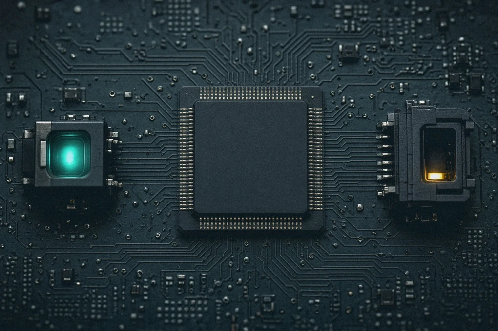
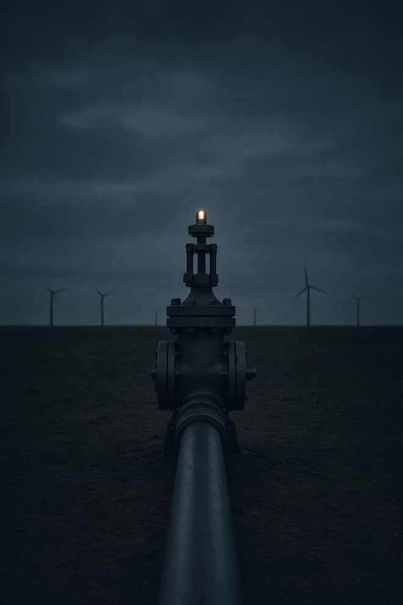
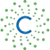
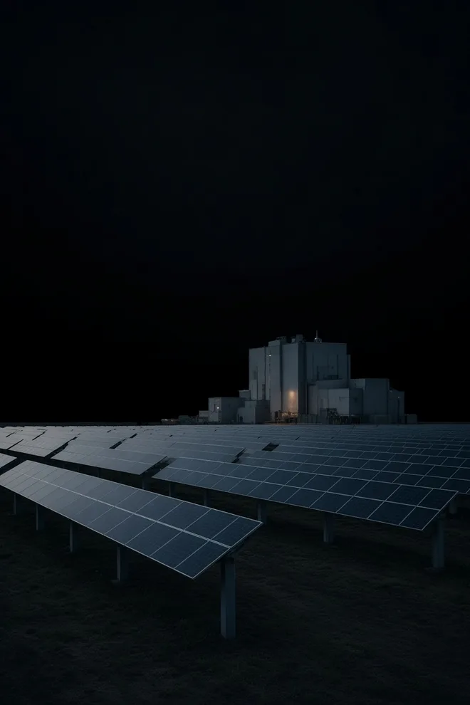
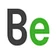
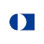
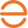
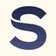
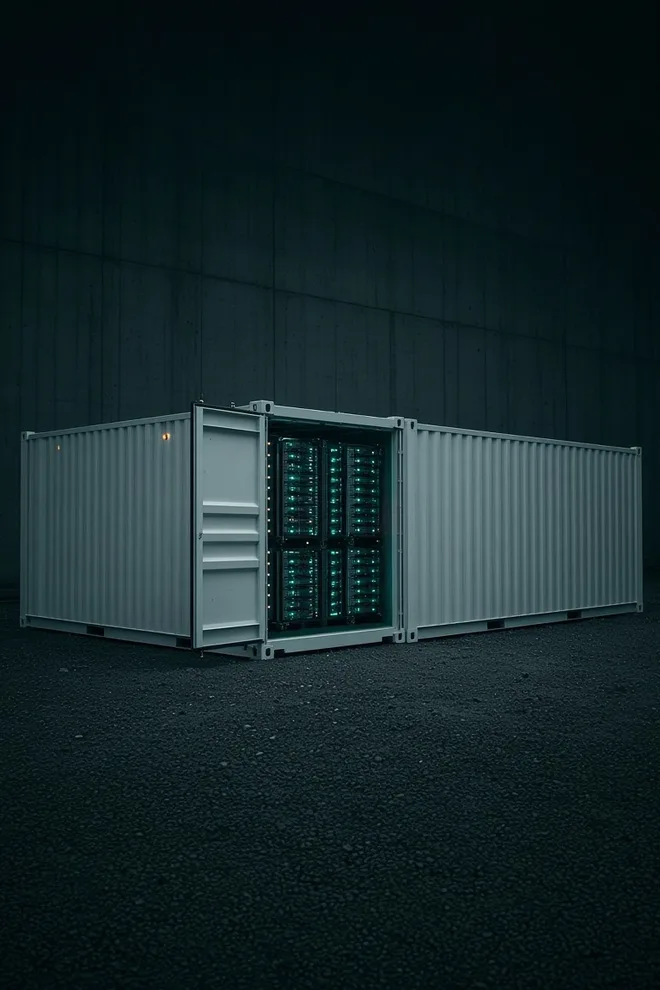

· Expand Energy
Expand Energy har gennemført handlen med Twin Eagle
Selskabet skrev, at handlen er gennemført, og at Twin Eagle bliver et datterselskab. Twin Eagle er beskrevet som et marketingselskab.
Hører til: Led 1 · Brændsel
Tema · Energi
Data pr. 16. oktober 2026
Det skyldtes ikke én enkelt fejl. Elnettet mistede kontrollen over spændingen, og anlæg koblede sig fra, det ene efter det andet.1
Strøm skal nemlig for det meste laves i samme sekund, som du bruger den. Først i løbet af natten til 29. april var nettet i begge lande genetableret.1
Bag din stikkontakt arbejder en lang kæde af selskaber, og en del af dem ligger i NewDeal Invest.
Kilde: ENTSO-E, de europæiske systemoperatørers fællesorganisation. Ekspertpanelets endelige rapport, 20. marts 2026. Læs hos ENTSO-E ↗

Udloddende andelsklasse (PMINDI) vises. Skift til akkumulerende (PMINDIAKK) i regneren længere nede. Vægte er andele af fondens formue. Kilde: fondens positionsdata.5
Fordi en chip er en lille maskine, der kører på strøm.
Hvert AI-svar, hver video og hver betaling på telefonen kører på servere i et datacenter. De servere bruger strøm hele døgnet.
Ifølge Det Internationale Energiagentur (IEA) brugte verdens datacentre omkring 415 TWh i 2024. Det svarer til cirka 1,5 % af al strøm på kloden.2
NewDeal Invests eget grundlag kalder energi for første led i AI-kæden. Uden strøm kan chips og datacentre ikke arbejde.5
Fonden ejer selskaber i alle fire led på strømmens vej. Grundlaget forklarer hvorfor: Man ved ikke på forhånd, hvilket led der bliver flaskehalsen, og hvem der ender med at tjene pengene.5
Pr. 16. oktober 2026 lå 16,96 % af PMINDI i energi. Det er fondens næststørste tema. Kun chips og halvledere vejer mere.
Hvert selskab tæller kun i ét tema, nemlig sit hovedtema. Kontanter (0,69 %) er ikke med. Kilde: fondens positionsdata pr. 16. oktober 2026.5
Groft sagt ligger knap en sjettedel af fonden i strøm. På de næste skærme kan du se, hvor.
… så ville cirka ligge i energiselskaber.
Regneeksempel ud fra fondens vægte pr. 16. oktober 2026. Det viser kun, hvordan beløbet ville fordele sig i dag. Det er ikke et forslag om at investere og siger intet om fremtiden.
Rejsen
"Energi" er ikke én ting. Et gasselskab, en batteriudvikler og et firma, der bygger elmaster, hører alle til energitemaet. Men de laver noget vidt forskelligt og tjener penge på hver sin måde.
Linjen til venstre er strømmen. Scroll ned, og følg den gennem fire led.
Led 1 af 4 · Brændsel

311 kr.af dine 10.000 kr. · 3,11 % af fonden · 12 selskaber
Det sker her
Meget strøm bliver stadig lavet ved at brænde gas af eller spalte uran. Gassen bliver boret op og sendt videre i rør. Uran skal beriges, før en reaktor kan bruge det.
Sådan tjener de penge
De sælger brændslet eller ydelser omkring det, fx boring og rørledninger. Indtjeningen følger i høj grad prisen på gas og uran.
Læg mærke til
En aftale er ikke det samme som en levering. Centrus Energy beriger uran. Grundlaget kalder Antares en aftale fra 17. september 2026, ikke en levering.6
Tryk på et selskab for at se, hvad det laver, og hvem kunderne er.
Hvad laver det? Producerer naturgas i USA. Selskabet er dannet ved en sammenlægning af Chesapeake og Southwestern. Det skrev 16. september 2026, at handlen med Twin Eagle er gennemført. Datoen ligger efter beholdningen.
Kunder: Købere af gas.
Hvad laver det? Producerer naturgas i Haynesville, i Louisiana og i det østlige Texas. Selskabet skriver, at jordpositionen i Western Haynesville er mere end 535.000 netto-acres, og at gassen er certificeret efter MiQ-standarden. Det er brændsel, ikke en mine.
Kunder: Købere af gas til industri, kraftværker og videre distribution.
Hvad laver det? Leverer trykpumpning til olie- og gasboringer i Permian-bassinet. Det er service, ikke et kraftværk og ikke en mine.
Kunder: Selskaber, der udvinder olie og gas.
Hvad laver det? Producerer naturgas og LPG i Marcellus i West Virginia. Over 850.000 acres står uden dato. 24 millioner tønder LPG i 2025 er eksport, ikke et kraftværk.
Kunder: Eksportmarkeder i 2025. Navne på købere er ikke taget med.
Hvad laver det? Beriger isotoper. Stiftet i 2021. En del er stabile isotoper til medicin og halvledere. PET Labs er nuklearmedicin i Sydafrika. Quantum Leap Energy er skrevet som fremtidigt brændsel, herunder HALEU. Teksten siger ikke, at et anlæg er i drift.
Kunder: Siden nævner medicin og halvledere som markeder. Den nævner ikke en navngiven leverance.
Hvad laver det? Driver rørledninger til gas.
Kunder: Grundlaget nævner ikke kunderne.
Kilde: NewDeal Invests gemte selskabsdata.
Hvad laver det? Producerer olie og gas i Argentina.
Kunder: Grundlaget nævner ikke kunderne.
Kilde: NewDeal Invests gemte selskabsdata.

Centrus EnergyUSA0,18 %18 kr.Hvad laver det? Beriger uran til brændsel. Selskabet skriver, at berigning begyndte i slutningen af 2023 på American Centrifuge Plant i Piketon i Ohio. Det er ikke et kraftværk og ikke en mine.
Kunder: Det amerikanske energiministerium og aftagere af brændsel. Antares er en aftale fra 17. september 2026, ikke en levering.
Hvad laver det? Producerer naturgas i Appalachia. Købet af Equitrans Midstream blev gennemført 22. juli 2024.
Kunder: Købere af gas. Navne er ikke taget med.
Hvad laver det? Leverer sand til olie- og gasudvinding og leverer strøm.
Kunder: Grundlaget nævner ikke kunderne.
Kilde: NewDeal Invests gemte selskabsdata.
Hvad laver det? Producerer naturgas.
Kunder: Grundlaget nævner ikke kunderne.
Kilde: NewDeal Invests gemte selskabsdata.
Hvad laver det? Producerer olie og gas.
Kunder: Grundlaget nævner ikke kunderne.
Kilde: NewDeal Invests gemte selskabsdata.
· Expand Energy
Selskabet skrev, at handlen er gennemført, og at Twin Eagle bliver et datterselskab. Twin Eagle er beskrevet som et marketingselskab.
Hører til: Led 1 · Brændsel
Led 2 af 4 · Producér

925 kr.af dine 10.000 kr. · 9,25 % af fonden · 39 selskaber
Det er det største led med fire slags selskaber. Nogle sælger maskinerne, nogle ejer værkerne, og nogle tegner stadig deres første reaktor.
Det sker her
I kraftværket bliver brændsel til bevægelse og bevægelse til strøm. Det kræver kedler, gasturbiner, motorer og generatorer. Brændselsceller laver strøm uden at brænde noget af.
Sådan tjener de penge
De fleste ejer ikke selv et kraftværk. De sælger maskiner og service til dem, der gør.
Læg mærke til
At bygge er ikke at eje. Babcock & Wilcox designer og bygger anlæggene, men Base Electron skal eje dem, står der i grundlaget.6
Hvad laver det? Laver kedler og står for design og byggeri. Meddelelsen af 4. marts 2026 er 1,2 GW for Base Electron, som skal eje anlæggene. Det er ikke et kraftværk, Babcock & Wilcox driver. 20 turbiner af 11. august 2026 ligger efter beholdningen.
Kunder: Base Electron er skrevet som den uafhængige producent, der skal udvikle og eje anlæggene. Applied Digital er nævnt som modtager af strømmen under særskilte aftaler.
Hvad laver det? Laver motorer og strømsystemer, bl.a. til datacentre.
Kunder: Grundlaget nævner ikke kunderne.
Kilde: NewDeal Invests gemte selskabsdata.
Hvad laver det? Laver brændselsceller. Hovedkontoret ligger i Burnaby i Canada, og der er fabrik i Bend i Oregon. FCmove er moduler til køretøjer. FCwave er et skab til skibe og stationær brug. FCgen er stakke. GeoPura HPU er en generator på brint. Over 1,6 GW er en kapacitet, ikke et målt år. Det er ikke et kraftværk.
Kunder: Siden nævner busser, lastbiler, skibe, tog og reservekraft. Den nævner ikke en navngiven kunde.
Hvad laver det? Leverer lokal strøm fra gas til datacentre.
Kunder: Grundlaget nævner ikke kunderne.
Kilde: NewDeal Invests gemte selskabsdata.
Hvad laver det? Fremstiller flymotorer og kraftsystemer. Selskabet skrev 15. juni 2026, at Videberg Kraft har valgt Rolls-Royce SMR til tre små reaktorer på Sveriges vestkyst. Det er efter beholdningen og ikke et værk i drift. Atomkraft er ikke hele selskabet.
Kunder: Flyselskaber og forsvar. Videberg Kraft er et valg, ikke en kunde med et værk i drift.

Bloom EnergyUSA0,21 %21 kr.Hvad laver det? Leverer brændselsceller, der laver strøm på stedet hos kunden. Selskabet skrev 1. april 2025, at cellerne skal bruges på Conagras fabrikker i Troy og Archbold i Ohio. Det er en aftale, og teksten siger ikke, at cellerne allerede kører.
Kunder: Virksomheder og datacentre, der vil have strøm på egen grund. Aftalen nævner Conagra i Ohio.
Hvad laver det? Leverer udstyr til elnet og elproduktion. Netsiden skriver, at GIS-udstyr dækker fra 50 kV til 800 kV. Gassiden viser turbinerne 9HA, 7HA og LM2500. Selskabet driver ikke værkerne.
Kunder: Elselskaber og industri. Teksten siger ikke, at selskabet ejer ledningerne.
Hvad laver det? Ingeniør- og byggefirma, der ejer en andel af NuScale.
Kunder: Grundlaget nævner ikke kunderne.
Kilde: NewDeal Invests gemte selskabsdata.
Hvad laver det? Leverer brændselsceller og udstyr til brint. Selskabet skrev 22. april 2026, at anlægget i St. Gabriel i Louisiana har lavet flydende brint siden 23. april 2025. Det er et fælles anlæg med Olin, ikke et elselskab.
Kunder: Industri og transport, der bruger brint.
Hvad laver det? Laver pumper og ventiler.
Kunder: Grundlaget nævner ikke kunderne.
Kilde: NewDeal Invests gemte selskabsdata.
Hvad laver det? Leverer strømproduktion og fordeling tæt på store forbrugere. Selskabet skrev 6. juli 2026, at det har købt GESA, som er service til kraftværker. Datoen ligger efter beholdningen. Det er ikke et kraftværk i drift.
Kunder: Datacentre, industri og energikunder.
Hvad laver det? Laver maskiner og gasgeneratorer.
Kunder: Grundlaget nævner ikke kunderne.
Kilde: NewDeal Invests gemte selskabsdata.
Hvad laver det? Fremstiller motorer og generatorer. Fem dele: komponenter, motorer, distribution, kraftsystemer og Accelera. Mere end 13.000 forhandlere står uden egen dato. Det er ikke et elselskab.
Kunder: Forhandlere og slutkunder. Navne er ikke taget med.
· Rolls-Royce
Rolls-Royce, som fonden ejer, skrev, at Videberg Kraft har valgt Rolls-Royce SMR til tre små modulære reaktorer på Sveriges vestkyst. Videberg Kraft ejes i dag af Vattenfall og Industrikraft i Sverige. Den svenske stat køber 60 % med virkning fra 2027. Et valg er ikke en byggetilladelse og ikke et værk i drift.
Hører til: Led 2 · Producér (2a maskinerne)
Det sker her
Elselskaber ejer kraftværker og ofte også ledningerne ud til hjem, fabrikker og datacentre. De skal hele tiden få produktion og forbrug til at passe.
Sådan tjener de penge
De producerer, sælger og transporterer strøm. Nogle har lange aftaler med store kunder. Ifølge grundlaget dækker Vistras aftaler med Meta 2.176 MW fra værker, der allerede kører.6
Læg mærke til
Et reguleret elselskab, fx Southern Company, er et selskab, hvor myndighederne har indflydelse på priser og indtjening.
Hvad laver det? Producerer strøm i USA, blandt andet fra gas og atomkraft. Selskabet skrev 9. januar 2026, at aftaler med Meta dækker 2.176 MW i drift og 433 MW øget effekt. Det er ikke en ny reaktor.
Kunder: Meta er kunden i aftalen. Selskabet skriver, at strømmen stadig går til nettet.
Hvad laver det? Elselskab med atomkraft, gas, sol og vind. Aftalen med Dominion 18. maj 2026 er ikke lukket.
Kunder: Florida Power & Light. Cirka 12 millioner mennesker står i meddelelsen 18. maj 2026.
Hvad laver det? Producerer strøm i USA fra atomkraft, kul, naturgas og olie. Susquehanna er atomkraftværket. Siden skriver, at Brandon Shores kører videre efter en planlagt lukning. Det er ikke en udvikler af små reaktorer.
Kunder: Aftagere af strøm. Selskabet skriver, at det leverer til Amazon ved Susquehanna.
Hvad laver det? Forsyningsselskab, der leverer strøm.
Kunder: Grundlaget nævner ikke kunderne.
Kilde: NewDeal Invests gemte selskabsdata.
Hvad laver det? Forsyningsselskab, der leverer strøm.
Kunder: Grundlaget nævner ikke kunderne.
Kilde: NewDeal Invests gemte selskabsdata.
Hvad laver det? Forsyningsselskab, der leverer og transporterer strøm.
Kunder: Grundlaget nævner ikke kunderne.
Kilde: NewDeal Invests gemte selskabsdata.
Hvad laver det? Forsyningsselskab, der leverer og transporterer strøm.
Kunder: Grundlaget nævner ikke kunderne.
Kilde: NewDeal Invests gemte selskabsdata.
Hvad laver det? Reguleret elselskab. Selskabet skriver, at Plant Vogtle har fire enheder i drift og leverer strøm til mere end 1 million hjem og virksomheder i Georgia. Siderne daterer ikke tallene. Det er ikke en lille reaktor under udvikling.
Kunder: Kunder i selskabets forsyningsområder, herunder Georgia. Teksten nævner mere end 1 million hjem og virksomheder.

Clearway EnergyUSA0,10 %10 kr.Hvad laver det? Producerer strøm fra vedvarende energi.
Kunder: Grundlaget nævner ikke kunderne.
Kilde: NewDeal Invests gemte selskabsdata.
Det sker her
Solceller laver strøm af sollys. Elektronik omformer strømmen, så den passer til elnettet. I store solparker drejer stativer panelerne efter solen.
Sådan tjener de penge
De fleste sælger udstyr: paneler, invertere og drejestativer. De ejer ikke selve solparken. Sunrun skiller sig ud ved at levere solceller og batterier direkte til boliger.
Læg mærke til
Kapacitet er ikke produktion. T1 Energys fabrik står til 5 GW moduler om året. Grundlaget skriver selv, at det er en kapacitet og ikke et målt år.6
Hvad laver det? Laver solcellemoduler. Fabrikssiden sætter G1_Dallas til 5 GW moduler om året. Det er en kapacitet, ikke et målt år. G2-celler er anslået og ikke i drift. Foden skriver Austin, Texas, uden gade.
Kunder: Siden navngiver ikke en køber af modulerne.
Hvad laver det? Laver optimizers, invertere og en overvågningsplatform til solanlæg. Den 250.000. inverter hos Flex i Austin er dateret 2. juni 2025. Tallet er en tæller, ikke et års tal. Det er udstyr, ikke et kraftværk.
Kunder: Boliger, erhverv og mindre solparker. Teksten nævner ikke en navngiven park.

Enphase EnergyUSA0,40 %40 kr.Hvad laver det? Laver mikroinvertere til solanlæg. Stiftet i 2006. Hovedkontoret ligger i Fremont i Californien. Kontraktproduktion i South Carolina og Texas er kapacitet, ikke et målt år. Det er udstyr, ikke et kraftværk.
Kunder: Boliger og installatører. Siden nævner systemer i mere end 165 lande og navngiver ikke et kraftværk.
Hvad laver det? Laver tyndfilmsmoduler af cadmiumtellurid, i serierne 6 og 7. Fabrikker står i Ohio, Alabama, Louisiana, Indien, Malaysia og Vietnam. Fem fabrikker i USA er anslået til mere end 17 GW, når de er i fuld drift. Tallet er ikke årets produktion. Det er moduler, ikke et kraftværk.
Kunder: Kunder til store solanlæg og til mindre anlæg. Teksten nævner ikke en navngiven leverance.

SunrunUSA0,36 %36 kr.Hvad laver det? Leverer solservice og batterier til boliger. Stiftet i 2007. 4,6 GWh tilknyttet lager er pr. 30. juni 2026, efter beholdningen. Det er ikke et kraftværk.
Kunder: Boligejere. Siden skriver 22 stater, Washington D.C. og Puerto Rico. Den nævner ikke et navngivet elselskab som ejer af værket.
Hvad laver det? Laver Flex MLPE, optimizers, invertere og batterier til solanlæg. Stiftet i 2007. Hovedkontoret ligger i Los Gatos i Californien. Det er udstyr, ikke et kraftværk.
Kunder: Installatører og ejere af solanlæg. Teksten nævner ikke en navngiven park.
Hvad laver det? Laver soltrackere, effektelektronik og styringssoftware til store solparker. Beholdningen pr. 1. juni 2026 står under navnet Nextracker. Hovedkontoret ligger i Fremont i Californien. Det er udstyr, ikke et kraftværk.
Kunder: Teksten nævner ikke en navngiven solpark.
Hvad laver det? Laver solcellemoduler og batterilagring og udvikler store sol- og lagerprojekter. Hovedkontoret ligger i Kitchener i Ontario. e-STORAGE havde pr. 30. juni 2026 sendt over 23 GWh. Datoen ligger efter beholdningen. Det er ikke et elselskab.
Kunder: Siden skriver, at kunderne findes i mange lande. Den nævner ikke et navngivet elselskab.
Hvad laver det? Laver stativer, der drejer solpaneler i store solparker, og softwaren SmarTrack. Produkterne omfatter DuraTrack, STI H250 og OmniTrack. Adressen er i Albuquerque i New Mexico. Selskabet skriver, at det købte STI Norland i januar 2022. Det er udstyr, ikke et kraftværk.
Kunder: Kunder til store solparker. Teksten nævner ikke en navngiven park.
Det sker her
Et atomkraftværk spalter atomer og bruger varmen til at lave damp og strøm, døgnet rundt. SMR er mindre reaktorer, der kan bygges i moduler.
Sådan tjener de penge
I dette underpunkt er de fleste udviklere eller leverandører af udstyr og brændsel. Blandt fondens selskaber er det elselskaberne under 2b, der driver atomkraftværker, ifølge grundlaget.
Opdelingen bygger på selskabsbeskrivelserne i grundlaget. Elselskaberne tælles under 2b.6
Hvad laver det? Fremstiller reaktorer til flåden i Lynchburg. Project Pele er et design, ikke et værk i drift. Selskabet skrev 3. august 2026, at det har aftalt at sælge medicinforretningen. Aftalen er ikke gennemført. Datoen ligger efter beholdningen.
Kunder: Den amerikanske flåde og udviklere af reaktorer.
Hvad laver det? Udvikler små atomkraftanlæg. Selskabet skrev 6. august 2026, at testreaktoren Groves nåede en kædereaktion ved lav effekt. Det er efter beholdningen. Det er ikke et kommercielt kraftværk og ikke salg af isotoper.
Kunder: Store elforbrugere, hvis kraftværkerne bliver bygget.
Hvad laver det? Udvikler meget små atomreaktorer. University of Illinois indsendte 31. marts 2026 en ansøgning om byggetilladelse til KRONOS. Den er til behandling og ikke givet. Det er ikke et anlæg i drift.
Kunder: Ingen driftkunder i denne beskrivelse.
Hvad laver det? Laver udstyr, der måler stråling.
Kunder: Grundlaget nævner ikke kunderne.
Kilde: NewDeal Invests gemte selskabsdata.
Hvad laver det? Udvikler små modulære reaktorer. Selskabet skriver, at modulet er en cylinder på 76 fod gange 15 fod og vejer omkring 700 tons. Det er et design, ikke et værk i drift. Snapshottet har selskabet under fysisk tech.
Kunder: Forsyningsselskaber og store forbrugere, hvis et værk bliver bygget. Teksten beskriver ikke et værk i drift.
Hvad laver det? Udvikler metalliske brændselsstave til atomreaktorer. Hovedsædet ligger i Reston i Virginia. Det er ikke et værk i drift. Adgangen til en testreaktor i Idaho er dateret 9. september 2026 og ligger efter beholdningen.
Kunder: Ingen driftkunder i denne beskrivelse. Testen er endnu ikke gennemført i teksten.
Hvad laver det? Udvikler mikroreaktoren SOLO. Selskabet skriver, at konceptet er fra 2018. Forsiden skriver både 4 MW og 5 MW termisk. Denne tekst beskriver ikke et værk i drift.
Kunder: Industri, datacentre og andre store forbrugere, hvis anlægget bliver bygget.
Hvad laver det? Udvikler reaktoren IMSR med smeltet salt. De første anlæg er sat til begyndelsen af 2030'erne. Det er ikke et anlæg i drift.
Kunder: Ingen driftkunder i denne beskrivelse.
Led 3 af 4 · Tilslut

132 kr.af dine 10.000 kr. · 1,32 % af fonden · 7 selskaber
Det sker her
Mellem kraftværket og stikkontakten ligger master, kabler og transformerstationer. De flytter strømmen og ændrer spændingen undervejs. Det var her, i nettet, at spændingen løb løbsk i Spanien og Portugal.1
Sådan tjener de penge
Mange er entreprenører. De bygger og vedligeholder nettet for elselskaberne og bliver betalt pr. projekt, men ejer ikke ledningerne. Andre sælger eludstyr og software til nettet.
Læg mærke til
Her står strømmen i kø. Ifølge IEA tog en stor transformer op til 4 år at få leveret i 2024, og kabler 2-3 år.4 En ny højspændingsledning tager 4-8 år at bygge.2
IEA, feb. og april 2025. Tallene er fra en rundspørge i branchen og siger ikke, hvordan det ser ud i dag.
Fuld bjælke er en øvre grænse. Stribet bjælke er et interval. Stiplet bjælke er selskabets egen plan, ikke et værk i drift. Kilder: IEA2,3,4, Babcock & Wilcox kvartalsrapport (10-Q) for 2. kvartal 2026.7
Hvad laver det? Bygger elektriske anlæg i USA og Canada. Hovedkontoret i Thornton er ikke en ledning. Venice–Campbell 138 kV er et projekt uden dato.
Kunder: Kunder i USA og Canada. Navne på ejere af anlæggene er ikke taget med.
Hvad laver det? Tegner og fremstiller eludstyr, som samler strømmen i solparker, batterilagring og datacentre. Om-siden skriver, at det har stået på i 30 år. Adressen er 1500 Shoals Way i Portland i Tennessee. Det er udstyr, ikke et kraftværk.
Kunder: Teksten nævner ejere af solparker, udviklere og datacentre. Den nævner ikke et navngivet anlæg.
Hvad laver det? Bygger og vedligeholder elnet. Selskabet skriver, at West Fort McMurray-projektet i Alberta omfatter over 310 miles 500 kV-ledning og stationerne Livock og Thickwood Hills. Quanta ejer ikke ledningen. Hovedsædet ligger i Houston i Texas.
Kunder: Elselskaber og andre ejere af net.
Hvad laver det? Laver pumper og komponenter.
Kunder: Grundlaget nævner ikke kunderne.
Kilde: NewDeal Invests gemte selskabsdata.
Hvad laver det? Bygger elnet, rørledninger og infrastruktur frem til datacentre. Kontoret i Dallas er ikke en ledning. Fort Worth er linjearbejde. Bakersfield og Irvine er ikke den samme adresse.
Kunder: Elselskaber, energiselskaber og industri. Ikke ejer af datacentret i denne tekst.

Tantalus SystemsCanada0,10 %10 kr.Hvad laver det? Laver en platform til distributionsnet hos elselskaber. Produkterne på siden er TRUConnect, TRUFlex, TRUGrid, TRUSync og TRUSense. Kontorer står i Raleigh, Norwalk og Burnaby. Selskabet driver ikke nettet.
Kunder: Elselskaber. Teksten nævner ikke et navngivet selskab.
Hvad laver det? Laver maskiner og arbejdskøretøjer, bl.a. til elselskaber.
Kunder: Grundlaget nævner ikke kunderne.
Kilde: NewDeal Invests gemte selskabsdata.
· ENTSO-E
Et ekspertpanel med 49 medlemmer har fundet årsagen til blackouten 28. april 2025. Der var ikke én fejl, men mange samtidig: svingninger i nettet, huller i styringen af spændingen og anlæg, der koblede sig hurtigt fra.
Hører til: Led 3 · Tilslut
Led 4 af 4 · Lagr og sikr

328 kr.af dine 10.000 kr. · 3,28 % af fonden · 11 selskaber
Det sker her
Sol og vind laver strøm, når vejret er til det, og ikke nødvendigvis, når vi tænder for kedlen. Batterier flytter strøm fra ét tidspunkt til et andet. Reservegeneratorer tager over, hvis nettet går ned.
Sådan tjener de penge
Nogle sælger færdige batterisystemer eller generatorer i dag. Andre udvikler nye battericeller, som endnu ikke er i masseproduktion.
Læg mærke til
"Batteriselskab" kan både betyde en leverandør med kunder og en udvikler med en pilotlinje. Om QuantumScape skriver grundlaget fx, at der ikke er tale om masseproduktion.6
Hvad laver det? Laver litium-ion-celler med siliciumanode, blandet silicium og grafit. Stiftet i Silicon Valley i 2007. Fabrikker står i Sydkorea og i Malaysia. USA er hovedkontor og udvikling. Det er ikke et lager i drift.
Kunder: Siden nævner forbrugerelektronik, droner og industri. Den nævner ikke en navngiven leverance med et tal.
Hvad laver det? Leverer batterisystemer og software, der lagrer strøm på elnettet og afleverer den igen. Siden nævner platformen Smartstack. Det er ikke et kraftværk, og teksten siger ikke, at selskabet selv laver cellerne.
Kunder: Elselskaber, projektudviklere og store elforbrugere.
Hvad laver det? Fremstiller reservegeneratorer. Stiftet i 1959. Afbrydere til reservestrøm er sat til anvendelser op til 2 MW. Det er udstyr, ikke et kraftværk.
Kunder: Husholdninger, installatører og virksomheder. Navne er ikke taget med.
Hvad laver det? Udvikler litium-metal-batterier og materialer. Hovedkontoret ligger i Woburn i Massachusetts. Anlægget i Shanghai er pilotskala og blev færdigt i 2023. Chungju i Sydkorea er et supplement. Teksten siger ikke, at produktionen er et målt år. Det er ikke et lager i drift.
Kunder: Siden nævner biler, byluftfart og droner. Den nævner ikke en navngiven leverance med et tal.
Hvad laver det? Udvikler faststof-batterier og er stiftet i 2010. Foden på forsiden skriver 1730 Technology Drive i San Jose og siger ikke, at det er en fabrik. QS PowerBlock blev præsenteret 8. oktober 2026 som et referencedesign. Datoen ligger efter beholdningen. Det er ikke masseproduktion og ikke et lager i drift.
Kunder: Bilproducenter og datacentre er nævnt. Teksten beskriver ikke et lager i drift.
Hvad laver det? Udvikler faststofbatterier. Selskabet skriver, at det leverer celleteknologi til partnere og sulfid-elektrolyt til andre, der arbejder med faststof. Elektrolytten laves i pilotskala. Det er ikke masseproduktion og ikke et lager i drift.
Kunder: Siden skriver partnere. Den nævner ikke et navngivet bilmærke.
Hvad laver det? Laver battericeller med siliciumanode. Adressen er 1180 Page Ave i Fremont i Californien. Siden skriver, at fremstilling i kWh-skala begyndte i 2016, og at salg begyndte i 2018. I 2024 nævner siden en udvidelse i MWh-skala og GWh-skala som kontraktproduktion hos partnere. Pilotlinjen er ikke partnernes linjer.
Kunder: Siden nævner luftfart, robotter og elbiler. Den nævner ikke en navngiven leverance i denne tekst.
Hvad laver det? Laver zinkbatterier til elnettet. Det er batterier, ikke en mine og ikke et kraftværk.
Kunder: Elselskaber og projektudviklere. Teksten nævner ikke en navngiven leverance.
Hvad laver det? Laver lithium-ion-batterisystemer. Siden sætter fabrikken i Jamestown i New York til 137.000 kvadratfod og hovedkontoret i Mississauga i Ontario til 65.000 kvadratfod. Mississauga samler lavspændingssystemer. Faststof ligger i Electrovaya Labs og er udvikling, ikke fabrikken.
Kunder: Siden nævner industrielle kunder til lavspændingssystemer. Den nævner ikke et navngivet selskab.
Hvad laver det? Laver litium-ion-celler, moduler, pakker og lagringssystemer. To produktionssteder er ikke navngivet med by. Supportsiden er kundeservice og skriver adresser i Clarksville, Ludwigsfelde og Huzhou. Det er ikke bevis for, at en fabrik kører. Hovedkontoret ligger i Houston. Det er ikke et lager i drift.
Kunder: Siden nævner transport, tungt udstyr og lagring. Den navngiver ikke en kunde.
Hvad laver det? Laver batterier til boliger. Stiftet i 2018 i Poway i Californien. NV14 samles i San Diego. Det er ikke et lager i drift.
Kunder: Boliger via certificerede forhandlere. Siden navngiver ikke et lager, selskabet driver.
· QuantumScape
Selskabet præsenterede QS PowerBlock som et referencedesign til batterilager i serverstativer. Ifølge grundlaget er det ikke masseproduktion og ikke et lager i drift.
Hører til: Led 4 · Lagr og sikr

Endestation
I din stikkontakt, i en elbil eller i et datacenter. Her slutter energitemaet. Derefter tager chips og datacentre over, og datacentrene fylder 12,59 % af PMINDI.5
Dine 10.000 kr.
311 kr. · 925 kr. · 132 kr. · 328 kr.Brændsel · Producér · Tilslut · Lagr og sikr = 1.696 kr. i energi
De fire led tilsammen udgør 16,96 % af PMINDI. Bjælken viser, hvordan energidelen fordeler sig.
| Led | PMINDI | Antal | PMINDIAKK | Antal |
|---|---|---|---|---|
| 1 Brændsel | 3,11 % | 12 | 3,07 % | 11 |
| 2 Producér | 9,25 % | 39 | 9,48 % | 39 |
| 3 Tilslut | 1,32 % | 7 | 1,62 % | 7 |
| 4 Lagr og sikr | 3,28 % | 11 | 2,90 % | 11 |
| I alt energi | 16,96 % | 69 | 17,07 % | 68 |
Vægte i procent af hele fonden pr. 16. oktober 2026, regnet ud fra selskabsvægtene i grundlaget.5
Sorteret efter led og vægt. Hvert selskab står kun ét sted, også selv om det arbejder flere steder på vejen. Logoer og beskrivelser finder du ved hvert led ovenfor.
| Selskab | Led | PMINDI | PMINDIAKK |
|---|---|---|---|
| Expand Energy | 1 Brændsel | 0,66 % | 0,64 % |
| Comstock Resources | 1 Brændsel | 0,52 % | 0,52 % |
| ProPetro | 1 Brændsel | 0,32 % | 0,30 % |
| Antero Resources | 1 Brændsel | 0,29 % | 0,35 % |
| ASP Isotopes | 1 Brændsel | 0,22 % | 0,38 % |
| Kinder Morgan | 1 Brændsel | 0,22 % | 0,18 % |
| Vista Energy | 1 Brændsel | 0,20 % | 0,16 % |
| Centrus Energy | 1 Brændsel | 0,18 % | 0,19 % |
| EQT | 1 Brændsel | 0,17 % | 0,12 % |
| Atlas Energy Solutions | 1 Brændsel | 0,15 % | 0,14 % |
| Range Resources | 1 Brændsel | 0,11 % | 0,09 % |
| Canadian Natural Resources | 1 Brændsel | 0,07 % | ikke ejet |
| Babcock & Wilcox | 2 Producér | 0,87 % | 0,55 % |
| T1 Energy | 2 Producér | 0,77 % | 0,72 % |
| SolarEdge | 2 Producér | 0,56 % | 0,48 % |
| Power Solutions International | 2 Producér | 0,43 % | 0,34 % |
| Enphase Energy | 2 Producér | 0,40 % | 0,41 % |
| First Solar | 2 Producér | 0,39 % | 0,47 % |
| Sunrun | 2 Producér | 0,36 % | 0,49 % |
| Tigo Energy | 2 Producér | 0,34 % | 0,23 % |
| Ballard Power Systems | 2 Producér | 0,33 % | 0,23 % |
| Vistra | 2 Producér | 0,31 % | 0,44 % |
| Erock | 2 Producér | 0,27 % | 0,21 % |
| Rolls-Royce | 2 Producér | 0,25 % | 0,26 % |
| NextEra Energy | 2 Producér | 0,24 % | 0,19 % |
| Talen Energy | 2 Producér | 0,24 % | 0,21 % |
| Nextracker | 2 Producér | 0,23 % | 0,55 % |
| Bloom Energy | 2 Producér | 0,21 % | 0,37 % |
| Canadian Solar | 2 Producér | 0,20 % | 0,16 % |
| DTE Energy | 2 Producér | 0,20 % | 0,16 % |
| BWX Technologies | 2 Producér | 0,19 % | 0,18 % |
| CMS Energy | 2 Producér | 0,19 % | 0,17 % |
| GE Vernova | 2 Producér | 0,19 % | 0,26 % |
| American Electric Power | 2 Producér | 0,18 % | 0,16 % |
| FirstEnergy | 2 Producér | 0,18 % | 0,16 % |
| Array Technologies | 2 Producér | 0,17 % | 0,29 % |
| Oklo | 2 Producér | 0,17 % | 0,18 % |
| Southern Company | 2 Producér | 0,16 % | 0,10 % |
| Nano Nuclear Energy | 2 Producér | 0,15 % | 0,19 % |
| Mirion Technologies | 2 Producér | 0,12 % | 0,12 % |
| Fluor | 2 Producér | 0,11 % | 0,13 % |
| Plug Power | 2 Producér | 0,11 % | 0,15 % |
| Clearway Energy | 2 Producér | 0,10 % | 0,07 % |
| Flowserve | 2 Producér | 0,10 % | 0,10 % |
| NuScale Power | 2 Producér | 0,10 % | 0,13 % |
| Solaris Energy Infrastructure | 2 Producér | 0,10 % | 0,12 % |
| Caterpillar | 2 Producér | 0,08 % | 0,11 % |
| Lightbridge | 2 Producér | 0,08 % | 0,19 % |
| Cummins | 2 Producér | 0,07 % | 0,08 % |
| Terra Innovatum | 2 Producér | 0,05 % | 0,06 % |
| Terrestrial Energy | 2 Producér | 0,05 % | 0,06 % |
| MYR Group | 3 Tilslut | 0,52 % | 0,55 % |
| Shoals Technologies | 3 Tilslut | 0,22 % | 0,31 % |
| Quanta Services | 3 Tilslut | 0,16 % | 0,17 % |
| ITT | 3 Tilslut | 0,13 % | 0,14 % |
| Primoris Services | 3 Tilslut | 0,12 % | 0,16 % |
| Tantalus Systems | 3 Tilslut | 0,10 % | 0,19 % |
| Terex | 3 Tilslut | 0,07 % | 0,10 % |
| Enovix | 4 Lagr og sikr | 0,63 % | 0,47 % |
| Fluence Energy | 4 Lagr og sikr | 0,53 % | 0,50 % |
| Generac | 4 Lagr og sikr | 0,51 % | 0,48 % |
| SES AI | 4 Lagr og sikr | 0,44 % | 0,33 % |
| QuantumScape | 4 Lagr og sikr | 0,42 % | 0,34 % |
| Solid Power | 4 Lagr og sikr | 0,24 % | 0,17 % |
| Amprius Technologies | 4 Lagr og sikr | 0,17 % | 0,25 % |
| Eos Energy | 4 Lagr og sikr | 0,14 % | 0,16 % |
| Electrovaya | 4 Lagr og sikr | 0,09 % | 0,05 % |
| Microvast | 4 Lagr og sikr | 0,09 % | 0,11 % |
| NeoVolta | 4 Lagr og sikr | 0,02 % | 0,04 % |
Vægte pr. 16. oktober 2026. Vi viser ikke kurser eller afkast for de enkelte aktier. Canadian Natural Resources ejes kun i PMINDI.
Fire ting mere, der er sket i 2026, ud over nyhederne ved hvert led. De forklarer de fire led med virkelige eksempler. Det er nyheder, ikke anbefalinger.
· Vistra
Vistra, som fonden ejer, skrev, at aftalerne omfatter 2.176 MW fra to atomkraftværker i drift i Ohio og 433 MW ekstra effekt fra opgraderinger af tre værker. Ifølge Vistra går strømmen fortsat til nettet for alle elforbrugere.
Hører til: Led 2 · Producér (2b elselskaberne)
· Babcock & Wilcox
Selskabet skrev, at det er en design- og byggeaftale om fire naturgasfyrede kedler på 300 MW med dampturbiner. Base Electron skal eje anlæggene. Det er ikke et værk i drift.
Hører til: Led 2 · Producér (2a maskinerne)
· Oklo
Ifølge grundlaget er Groves en testreaktor, ikke et kraftværk, der sælger strøm. Oklo er endnu ikke i kommerciel drift.
Hører til: Led 2 · Producér (2d atomet)
· Centrus Energy
Leveringerne skal ifølge selskabet begynde inden udgangen af årtiet. Aftalen er ikke en levering, der allerede er sket.
Hører til: Led 1 · Brændsel
Fondens beholdning er opgjort 16. oktober 2026. En nyhed siger ikke noget om, hvad fonden ejer i dag. Links tjekket 23. oktober 2026.
De samme forbehold går igen i selskabsbeskrivelserne i grundlaget. De er gode at have med, når du læser en pressemeddelelse.
Kilde: selskabsbeskrivelserne i NewDeal Invests grundlag.6
Så spørg dig selv: Hvilket led handler det om? Brændsel, produktion, nettet eller batteriet?
Og er det noget, der er sket, eller noget, der står i en aftale?
Vil du vide mere om fonden, så start med de officielle dokumenter. Ingen kan sige, hvordan det går fremover.
Siden forklarer, hvordan energidelen af fonden er sammensat. Den er ikke en anbefaling af fonden eller af de enkelte selskaber, og den siger intet om fremtidigt afkast. NewDeal Invest yder ikke investeringsrådgivning.
Begge andelsklasser har risikoklasse 5 af 7 i det centrale informationsdokument (KID). Du kan tabe noget af eller hele dit indskud.
Data: NewDeal Invests datasæt pr. 16. oktober 2026. Det er et dateret øjebliksbillede, ikke live-data. Beløb er afrundede regneeksempler.
Investeringsforeningen PortfolioManager, afdeling NewDeal Invest, kl. n · afdeling NewDeal Invest Akk., kl. n.
Nyhedskortene linker direkte til selskabets eller organisationens egen side. Billederne er AI-genererede og viser ingen bestemte anlæg eller virksomheder.